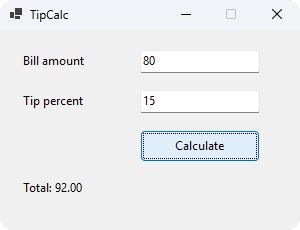

Background computer use on Windows for Claude Code: test a GUI app in a separate Windows session
Can Claude Code test a Windows desktop app without taking over your mouse, keyboard and screen? Yes, in our test: on 15 November 2026, with Anode 0.11.4's MCP server, headless Claude Code 2.1.325 built a small Windows Forms app, started it in Anode's hidden Windows session, found a wrong total by entering the spec's example and pressing the app's button, fixed the source, rebuilt and re-checked it in 5 of 6 runs (4 of 4 on Sonnet 5.5, 1 of 2 on Haiku 5.5); the completed runs took 45 to 141 s, and the one run that stopped (Haiku) was refused Anode's window-closing tool by our own permission list and didn't close the app another way. In 8,491 samples taken about every 50 ms over 437 s on the PC's own desktop, the app and Anode never had the foreground, the app never had a window or a process there (its process ran in session 2 only), and no pointer move happened without input in that session; the desktop was in use during three runs, and in the three where nobody touched it the pointer never moved at all. This needs a tool because, by their docs read on 16 November 2026, Claude Code's own computer use is not available on Windows, Claude Desktop's computer use "runs on your actual desktop", and the background mode that leaves your pointer and keyboard alone is documented for macOS only; open request #99740 asks Claude Code for an "isolated GUI testing mode on Windows".
We make Anode. Claude Code is Anthropic's; we are not affiliated with Anthropic. Our numbers come from six recorded runs whose data is linked under Method. Everything about Claude Code, Claude Desktop, Codex and the other tools comes from their own docs and issues, read on 15 November 2026, re-read on 16 November and linked; we did not run those features. If we got something wrong, open an issue and we will correct it.
The short answer
- To have it now, on Windows 10 or 11 Pro, Enterprise or Education (x64): install Anode, register it with Claude Code and ask for the test (steps below). Anode starts your app in its seat, which its README describes as "a Windows child session running as your user", with its own screen, pointer and keyboard focus. In our six runs the app's process ran only there.
- On Windows Home: this doesn't work. Anode needs Pro, Enterprise or Education.
- On macOS: Anode doesn't run there, and you may not need it: Anthropic's help centre says that on
macOS 15 or later the Claude Desktop app's computer use (Cowork and its Code tab) works in background windows by
default, without taking over your pointer or keyboard. The CLI's own computer use hides your other apps while it
works and needs an interactive session, so it isn't available with
claude -p(from their docs, not run by us). - If you need a security boundary: use a virtual machine or Windows Sandbox. The seat runs as your user, with your files and network (what the seat is not isolated from).
- If the check needs no desktop: as Anode's README says, an API, a shell or a headless browser test is simpler.
- If you want to watch the agent on your own desktop: Claude Desktop's computer use (a research preview on Pro, Max and Ultra plans) works there and hides your other windows while it works (from its docs, not run by us).
What Claude Code and Codex do on Windows today
From their docs and issues, read on 15 November 2026 and again on 16 November; we ran none of these features.
- Claude Code (the CLI), 2.1.325 of 13 November 2026: computer use is a research preview on macOS for
Pro, Max and Ultra plans; its docs say it is "not available on Linux or Windows", send Windows users to Claude
Desktop, and say it needs an interactive session, so it isn't available with
claude -p, the headless mode our runs used (Claude Code computer use docs). None of the computer-use lines in its changelog adds Windows to the CLI. - Claude Desktop (the Code tab and Cowork; v5.11492.5 of 13 November 2026): computer use is a research preview on macOS and Windows, for Pro, Max and Ultra plans, not Team or Enterprise. It "runs on your actual desktop" with access to what you approve, and Claude hides your other windows while it works (desktop docs, help centre, desktop changelog).
- Background mode, where Claude works in background windows and leaves your pointer and keyboard alone, is documented for macOS 15 or later, where it is the default (help centre). No Anthropic page we read says Windows has it: we checked the docs, the help centre, the release notes and both changelogs.
- Codex (computer use in the ChatGPT desktop app): OpenAI's docs say that on Windows it runs on the active desktop, moves the pointer, types and takes over the foreground, and "can't operate in the background while you keep using the same Windows session"; they suggest a Windows virtual machine or a second device (Computer Use, section "Windows foreground use").
- The requests: #99740, opened on 5 October 2026, asks for an optional "isolated GUI testing mode on Windows" built on Windows' Remote Desktop child sessions, to give the agent "an isolated/background interactive desktop for GUI testing"; it says the implementation needn't be child sessions, as long as the agent gets that isolated desktop. On 16 November it was open, with no comments, no reactions and no reply from Anthropic. #64381, which asked for the CLI's computer use on Windows, was closed as not planned by a stale-issue bot on 27 July 2026, with no Anthropic reply.
Microsoft documents a child session as a loopback Remote Desktop session tied to the user's own session, available since Windows 8 and Windows Server 2012, one active per system (child sessions). Anode's README says its seat is a child session for your own account, created by Windows' loopback Remote Desktop feature. Anode is a separate MCP server that Claude Code calls, not the built-in mode #99740 asks Anthropic for.
Set it up
From Anode 0.11.4's README. You need Windows 10
or 11 Pro, Enterprise or Education (not Home) on x64, and administrator rights once, for anode setup. On a
managed work PC, a policy that blocks unsigned programs or keeps Remote Desktop off will stop it. Anode's own
walk-through is Test your desktop app
with Claude Code.
1. Install, set up and register
In PowerShell, run the first line, then open a new terminal for the next two:
iwr -UseBasicParsing https://github.com/skulitom/Anode/releases/latest/download/install.ps1 -OutFile install.ps1; powershell -NoProfile -ExecutionPolicy Bypass -File .\install.ps1
anode setup | Out-Host # in a NEW terminal: one administrator prompt, once per machine
anode configure | Out-Host # registers Anode with the Claude Code and/or Codex CLIs on your PATHanode setupturns on the Remote Desktop host (adding no firewall rule) and child sessions. It can restart Remote Desktop Services, which disconnects any Remote Desktop session to this PC, so run it at the machine itself (what it changes).anode configurebacks up the client settings, registers Anode by absolute path, sets a 420-second tool timeout and installs theanode-desktopskill.anode configure claudepicks Claude Code only;--no-skillskips the skill. Restart Claude Code;/mcpshould listanode(connecting Claude Code).- If you sign in to Windows only with a PIN or Windows Hello, the seat needs your Windows password: choose Sign in… from the Anode tray icon or the viewer's header. An agent can't do this step, and Windows may ask again for a new seat (sign-in).
The PC we measured on was already set up and signed in, so we did not re-run these steps today. Our
runs also did not use anode configure: they gave Claude Code the server through --mcp-config
(mcp-config.json) in a fresh, empty config folder, without Anode's anode-desktop skill and with no timeout
setting.
2. Ask for the test
The prompt we gave Claude Code, word for word (prompt.txt):
You are working on TipCalc, a small Windows Forms app in the TipCalc folder (its spec is TipCalc/SPEC.txt). Check that the app does what the spec says by using it the way a user would, in Anode's background seat, not on my desktop.
- Build it with exactly this command: dotnet build TipCalc/TipCalc.csproj -c Release
- Start the built TipCalc.exe in the seat with Anode, and test the spec's example by typing into the app and pressing its button.
- If the app shows the wrong result, find the cause in the source, fix it, close the app, rebuild with the same command, start it again in the seat and test the same example again.
- Leave the app open showing the final result. Then report what the app showed before and after, what you changed, and each Anode tool you used.
Use only Anode's tools on the app's window. Keep the viewer hidden, don't touch any other window in the seat, and don't use my desktop.
3. Allow the tools it needs
Our allow-list was Read, Edit, Glob, Grep, Bash(dotnet build:*) and 15 of Anode's tools:
anode_guide, seat_status, seat_lease, seat_capabilities,
seat_run, seat_windows, seat_observe, seat_element,
seat_wait, seat_screenshot, seat_click, seat_type,
seat_key, seat_processes and seat_kill_process; runs 5 and 6 added
seat_window. With nobody to ask, headless Claude Code refused every call that needed approval (12 in
all). Two lessons:
- Allow Anode's
seat_window, or the agent may stop short of closing your app before a rebuild. In run 4, Haiku asked for it, was refused, chose not to close the window another way, and the rebuild failed because the running app locked its exe. The three Sonnet runs with the same list pressed the Close button in the window's title bar instead. - Expect a refused compound command. In five of the six runs Claude Code refused one chained
command. In runs 3, 5 and 6 it started with
cd TipCalc(in run 6:cd TipCalc && cat TipMath.cs MainForm.cs && dotnet build … | tail -5; cd ..; ls TipCalc), and Claude Code said parts of it needed approval. In runs 1 and 2 it ended withfindon a relative path, and Claude Code said it couldn't tell which file that meant while our wrapper's deny rules for secret folders were set. Acdto the run's folder by its full path followed by a build or file reads did run (run 1, call 20; run 4, call 3), as didls -la TipCalc && cat TipCalc/SPEC.txtin runs 4 and 5. Each time the agent carried on with other calls.
What we measured
The app: TipCalc, a Windows Forms app on .NET 10 with two text boxes ("Bill amount", "Tip percent"),
a Calculate button and a result label, all with accessible names. Its spec gives one
example: bill 80 and tip 15 should show "Total: 92.00". We planted one bug:
TipMath.Total returned bill + tipPercent, so the example
showed "Total: 95.00".
The runs: six headless claude -p jobs on 15 November 2026, 15:34 to 15:44 UTC, each in a
fresh copy of the app, with the prompt and allow-list above. Four ran on Sonnet 5.5 (claude-sonnet-5-5), two
on Haiku 5.5 (claude-haiku-5-5). After each job we read the app's result label ourselves in the seat, then
closed the app (results.json). The four Sonnet runs typed the numbers with
seat_type; the two Haiku runs set the boxes' values through accessibility (seat_element).
Calculate was pressed with a click (seat_click, runs 1, 3 and 6) or an accessibility invoke
(seat_element, runs 2, 4 and 5).
| Run | Model | Permission list | Finished the loop? | Time | Tool calls (Anode's) | Calls not ok | List-price cost (USD) | What we read in the seat afterwards |
|---|---|---|---|---|---|---|---|---|
| 1 | Sonnet 5.5 | without seat_window | Yes | 54.8 s | 26 (16) | 2, both refused by our list | 0.1814 | Total: 92.00 |
| 2 | Sonnet 5.5 | without seat_window | Yes | 140.8 s (model time 41.6 s; it waited for the seat) | 29 (19) | 4: 3 refused by our list, 1 seat wait that ran out | 0.1744 | Total: 92.00 |
| 3 | Sonnet 5.5 | without seat_window | Yes | 53.2 s | 26 (17) | 2, both refused by our list | 0.1593 | Total: 92.00 |
| 4 | Haiku 5.5 | without seat_window | No: it fixed the source, but the rebuild failed | 54.3 s | 22 (16) | 4: 2 refused by our list, 1 mistyped observation id, 1 failed rebuild | 0.0158 | Total: 95.00 (the first, unfixed build was still open) |
| 5 | Haiku 5.5 | with seat_window | Yes | 58.8 s | 35 (24) | 2, both refused by our list | 0.0184 | Total: 92.00 |
| 6 | Sonnet 5.5 | with seat_window | Yes | 45.3 s | 22 (13) | 1, refused by our list | 0.1373 | Total: 92.00 |
| All | 5 of 6 | 160 (105) | 15 | 0.6866 | Total: 92.00 in 5 of 6 |
Every run made the same one-line fix, return bill + bill * tipPercent / 100; (run 4 wrote
100m, the same value). Of the 15 calls that weren't ok, 12 were refused by our permission list; 1 was run
2's first request for the seat, which our own session still held after taking the screenshot below and closing run
1's app (Anode put the agent first in line, and its second request got the seat); 1 was an observation id that Anode didn't recognise because the
model had mistyped it (it resent the right one); and 1 was run 4's failed rebuild. Costs are Claude Code's own
list-price estimate for these tiny runs.
Run 6, call by call
Sonnet 5.5, 22 calls, 13 of them Anode's, 45.3 s (run6.agent.json):
- Loaded Anode's tool definitions (Claude Code's ToolSearch), read the spec and listed the source files.
- Tried one compound shell command, which the allow-list refused.
- Built with
dotnet build TipCalc/TipCalc.csproj -c Releasein its own shell, and readTipMath.csandMainForm.cs. seat_runstarted TipCalc.exe in the seat,seat_windowsfound its window andseat_observeread its controls, without a screenshot.seat_typetyped 80, Tab, 15;seat_clickpressed Calculate;seat_observeread the result: "Total: 95.00".- Edited
TipMath.cs. seat_windowclosed the app, andseat_processesshowed it had exited.- Rebuilt with the same command.
seat_run,seat_windows,seat_typeandseat_clickagain, thenseat_waituntil the result label contained "Total: 92.00".

What the PC's own desktop saw
parent_watch.py ran on the PC's own desktop (session 1) from 2 seconds before each
job until it ended. About every 50 ms (it sleeps 50 ms between samples) it read the pointer position, which process owned the foreground window (compared only
with TipCalc's and Anode's names) and the session's last-input clock; once a second it listed the sessions holding a
TipCalc.exe process and counted that app's windows on this desktop. A pointer move counts as "without input" when the
clock shows no input in the session since the previous sample, that is, a program moved the pointer. As a positive
control, control_run.py ran the watcher inside the seat and moved the pointer there 6
times with SetCursorPos: it counted 6 of 6, and Anode's pointer guard count went from 9 to 15 with 0
forwarded (control-result.txt).
| Run | Samples | Seconds | Samples with new input | Pointer positions | Foreground changes | Foreground samples: app or Anode | Pointer moves without input | Sessions holding the app's process | App windows on this desktop | Pointer guard count, before → after |
|---|---|---|---|---|---|---|---|---|---|---|
| 1 | 1,165 | 60.1 | 137 | 293 | 4 | 0 | 0 | 2 | 0 | 7 → 8 |
| 2 | 2,833 | 145.8 | 7 | 13 | 0 | 0 | 0 | 2 | 0 | 8 → 8 |
| 3 | 1,128 | 58.1 | 0 | 1 | 0 | 0 | 0 | 2 | 0 | 8 → 9 |
| 4 | 1,150 | 59.3 | 38 | 64 | 0 | 0 | 0 | 2 | 0 | 9 → 9 |
| 5 | 1,239 | 63.8 | 0 | 1 | 0 | 0 | 0 | 2 | 0 | 9 → 9 |
| 6 | 976 | 50.2 | 0 | 1 | 0 | 0 | 0 | 2 | 0 | 9 → 9 |
| All | 8,491 | 437.3 (sum of the rows) | 182 | 4 | 0 | 0 | 2 only | 0 | 7 → 9, 0 forwarded |
Anode's pointer guard counts the seat's pointer moves it kept off your own pointer: Windows' Remote Desktop control in
Anode's viewer would otherwise copy them onto yours while your pointer is over the viewer's rectangle
(Anode's
troubleshooting). Its count rose by 1 in runs 1 and 3 and not in run 6, though all three clicked with seat_click (two or
three times each); we don't know which seat event each count was. Its forwarded count stayed at 0
(run-notes.txt; per run: 1,
2, 3,
4, 5,
6).
What this doesn't show
- Other apps. One tiny Windows Forms app with accessible controls and a planted one-line bug. No WPF, WinUI, MAUI or canvas-only app; no dialogs, menus, drag and drop or several windows.
- Harder tasks. The prompt named the build command, and the spec gave the example, the expected result and the formula itself, so the agent didn't have to work out what to test or what the right code was.
- Other ways of running Claude Code. Headless
claude -ponly, not the interactive terminal. Two models, six runs, one PC, Windows 11 only. - A hidden viewer. Anode's viewer was open, view-only, on a second monitor throughout. We didn't test it hidden, or with Take control pressed, when your input goes to the seat by design. The Sonnet reports in runs 2 and 3 said the viewer stayed hidden; it didn't, so check what an agent says it did.
- Typing on your desktop. The watcher can't tell a person's key press from an injected one. So "nothing typed on your desktop" rests on where the app ran (session 2 only, never a window on this desktop) and on the three runs with no input at all, in which the pointer stayed at one position and the foreground never changed.
- A pointer move while someone used the mouse. The watcher flags a pointer move only when no input reached the session since the previous sample. In runs 1, 2 and 4 someone was using the PC, so a move made by a program at those moments would have counted as "with input". The firm evidence is runs 3, 5 and 6, where the pointer never moved.
- Who changed the foreground in run 1. Its four foreground changes happened while someone used the PC, and none went to the app or Anode, but we can't say who caused them: the watcher doesn't record window titles or other programs' names.
- A cold start. The seat had been up for about 16 hours and was signed in. Starting a seat, and the PIN sign-in, weren't part of these runs.
- Codex. Not run.
- Cost at scale. The costs are Claude Code's list-price estimate for these tiny runs.
With Codex instead
anode configure also registers Anode with the Codex CLI when it is on your PATH, including the 420-second
tool timeout that lets a cold seat finish signing in (README;
connecting Codex).
Codex's own computer use on Windows works on your active desktop and takes over the pointer and foreground, by OpenAI's
docs. We didn't run Codex for this page.
Where Anode doesn't help
- Windows Home, macOS and Linux. The release targets x64 Pro, Enterprise and Education, or Windows Server with a Remote Desktop host; ARM64 is not validated.
- Your open windows. The agent works only on windows in the seat, not on the ones you have open. Apps that refuse to run twice, such as Office or a browser on the same profile, won't run in both sessions at once.
- Not a sandbox. The seat signs in as you, with your files, saved sign-ins and network. Apps that restore their last session, such as Windows 11 Notepad, reopen your documents there, and startup programs run there too (two did in ours).
- Elevated apps. The seat runs unelevated; don't plan on it installing software.
- Sign-in. If you sign in to Windows only with a PIN or Windows Hello, a new seat may need your password through Sign in…; an agent can't do it.
- Parts that do touch your desktop. With Take control pressed in the viewer, your input goes to the seat and the seat's pointer moves yours. When a game in the seat needs Steam, Anode starts Steam on your desktop, minimized. Without HidHide, its virtual gamepad reaches games on your desktop.
- One seat, shared by agents in turn (run 2 waited for it).
Sources: Anode 0.11.4's README, SECURITY.md and USAGE.md. The full list, and a comparison with Codex, Claude, GitHub Copilot's app, agent-desktop and Cua Driver, is in AI computer use on Windows in the background.
When to use something else
From each tool's docs or issues, read on 16 November 2026, not run by us.
Claude on macOS
On macOS 15 or later, the Claude Desktop app's computer use (Cowork and its Code tab) works in background windows
by default and leaves your pointer and
keyboard alone (help
centre). The CLI's own computer use hides your other apps while it works and needs an interactive session, so it
isn't available with claude -p (its docs).
Claude's own computer use on Windows, while you watch
For a short task you want to see happen and can step away for: Claude Desktop's computer use runs on your actual desktop, hides your other windows while it works, and is a research preview on Pro, Max and Ultra plans (desktop docs). Claude Code's CLI has no computer use on Windows.
Windows Sandbox or a virtual machine
When the agent's work must not reach your files, accounts or network. Windows Sandbox comes with Pro, Enterprise and Education, not Home; closing it deletes everything in it, software installed on your PC isn't available inside it, and only one runs at a time (Microsoft). Hyper-V comes with Windows 11 Pro, Enterprise and Education (Microsoft). Either way you set up your app's runtime and tools in a second Windows, which #99740 counts as more overhead. OpenAI suggests a Windows virtual machine for Codex's computer use.
Tools that work inside your own session
They send accessibility calls or window messages to one app's window in your own session, so they can reach windows
you already have open, without a second session. agent-desktop
(1.3.1, 13 November; Windows 10 1809 or later, x64 or ARM64): its README says its ref actions use the accessibility API
without moving the pointer or taking focus; typing needs --headed (its Windows
page), and an open issue
(#567) reports its actions bringing background
windows forward. Cua Driver (0.52.6, 16 November): its
docs say it doesn't raise the window, move the real pointer or switch the frontmost app, sending window messages to
the target window and reporting background_unavailable when it can't; its sessions still share one screen,
keyboard and focus. #99740 notes that window-scoped tools don't give complete desktop semantics to apps with several
windows.
Headless tests
When the check needs no desktop. This page's planted bug sits in one function, so a unit test would find it without any window; a GUI loop earns its keep when the fault is in what the window shows or how it responds.
A headed browser
A pull request for a Playwright option to stop a headed Chromium's new pages taking the operating system's focus (#41282) was closed unmerged on 15 June 2026, and the follow-up issue (#41306) was closed as not planned on 31 October 2026. Run browser tests headless when you can. Anode's README says it also runs headed browsers in the seat; we didn't measure that here.
Method: how to repeat it
- The PC: Windows 11 Pro 25H2, build 26200, 64-bit; .NET SDK 10.0.401; Claude Code 2.1.325; Anode 0.11.4, set up and signed in beforehand. The seat was session 2 and had been up for about 16 hours; its viewer was open, view-only, on a second monitor. A VPN client and another tool's overlay, both started with the seat, had windows there and weren't used.
- Each run: a fresh copy of TipCalc (SPEC.txt,
TipMath.cs, MainForm.cs,
Program.cs, TipCalc.csproj) in an empty
folder;
parent_watch.pystarted on the PC's own desktop 2 seconds before the job and stopped after it; then Claude Code, headless, from that folder, through our job wrapper, which adds a spending cap and a fresh, empty Claude Code config folder (no user settings, plugins, skills, memory or other MCP servers; Claude Code's own bundled skills and plugins still load) and runs:
The allow-list is the one under Set it up.claude -p --settings <a deny list for secret folders> --setting-sources user --strict-mcp-config --model sonnet|haiku --max-budget-usd 3 --no-session-persistence --output-format stream-json --verbose --mcp-config mcp-config.json --allowedTools "<the list below>" --max-turns 60 < prompt.txt - Afterwards: we read the result label ourselves in the seat (
seat_observeorseat_wait), closed the app, and read Anode's pointer guard count. The figure was saved inside the seat; grab_window.ps1 saves one rectangle of the screen of the session it runs in. - Data: results.json, run-notes.txt, control-result.txt, prompt.txt, mcp-config.json, parent_watch.py, control_run.py, summarize_run.py, tipcalc-after-fix.png. Each run's calls, desktop summary and fix: run 1 (calls, desktop, fix), run 2 (calls, desktop, fix), run 3 (calls, desktop, fix), run 4 (calls, desktop, fix), run 5 (calls, desktop, fix), run 6 (calls, desktop, fix).
- Not published: the raw job logs, because they hold this PC's paths;
runs/runN.agent.jsonis made from them bysummarize_run.py, which keeps each call's name, a short argument note and any error text, and drops tool results, screenshots and paths. In run 2's busy-seat error we also replaced our own session's internal name with "another Claude Code session of ours". The watcher's CSV files hold the pointer path of whoever used the PC, so only their summaries are published.

Searches this page answers
Run together on 15 November 2026 at about 15:31 UTC, with a web search tool on a US index (raw results). "Our site" means skulitom.github.io/Anode or github.com/skulitom/Anode. Three of the results named below were on claudeissues.com, a site that mirrors GitHub issues; we couldn't open it from our network on 16 November, so it is named here and the link goes to the issue itself.
- "Claude Code computer use Windows background": first were a DEV Community post on Cua Driver, Cybersecurity News and Cua's blog. Nothing from our site or repository.
- "Claude Code isolated Windows GUI testing separate session": first were a claudeissues.com mirror of #99740, claude-code #27658 and #60879. Not our site, but Anode's README on raw.githubusercontent.com ranked 11th, and the search summary described Anode.
- "background computer use on Windows for Claude Code and Codex": the same DEV Community post, Cua's blog and a comparison of Codex, Claude and Gemini. Nothing from our site or repository.
- "Claude Code test WinForms WPF app GUI without taking over mouse": the claudeissues.com mirror of #99740, Cua's blog and a post on driving a GUI app from an agent. Nothing from our site or repository.
- "RDP child session AI agent desktop automation Windows": the claudeissues.com mirror of #99740, then Anode's README on raw.githubusercontent.com, then agent-rdp (the result was its Smithery listing, which returned 404 on 16 November, so the link goes to its repository). Not our site; the summary quoted Anode's README.